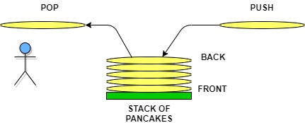
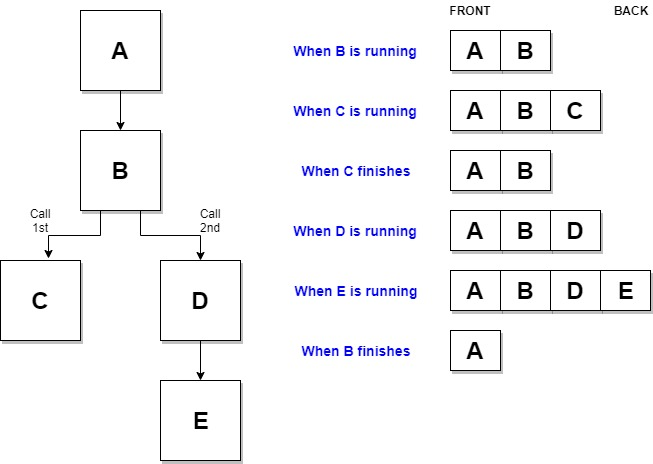
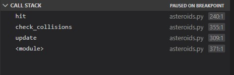

03 Prepare: Understanding Code using Reviews / Stacks
Overview
This week you will explore techniques of code review to support your understanding of code. You will practice your skills at understanding code using code that implements the Stack data structure. You are still in the PREPARE phase of the course:

Here is the two day plan for this lesson:
Day 1 - Complete the reading below. The reading should take 1 hour to complete. For on-campus students, class time will be used to discuss the reading and explore Stacks through examples. You should begin independently to work on 03-Prove. You should plan on the assignment taking 3 hours to complete.
Day 2 - You will work with your study group to complete 03-Teach. On-campus students will complete this activity during class time. The activity should take 1 hour to complete. You should independently finish work on 03-Prove.
The Stack Data Structure
A Stack is a Data Structure that is chacterized by the order in which items are added and removed. Often called "Last In, First Out" (LIFO), the Stack can be used to accomplish various tasks and can be implemented using a Python list.
Stack of Pancakes
If you were going to make pancakes for your family or friends, you probably will have a plate ready to stack the hot pancakes as the finish the cooking process. Each time we put a pancake onto the stack, we call this a push operation. In our culinary example, we might say that each new pancake goes onto the top of the stack. However, since we are going to implement our stacks in Python, we will say that the pancake is actually added to the back. When we take a pancake off to eat, we call this a pop operation. Notice that we push and pop from the back of the stack. Removing from the middle of the stack is not generally allowed (especially at the dinner table). Notice that the pancake at the front is the the very first pancake that was cooked. If the pancakes are made faster than they are eaten, then this first pancake will get cold. A LIFO (Last In Last Out) or FIFO (First In First Out) structure like the Stack can result in data not being used for a long time. This might not work well for a rotating stock system in a grocery store, but the real benefit of the stack is the ability to rememember where we have been.
The "Undo" Option and the Stack
One of the most common stacks that people use on a computer is related to the Undo option in word processors and editors. When we type something on the keyboard, the item is both displayed to the screen and also added to a stack. If we type the phrase "The rain in Spain stays mainly in the plain" we would expect the following commands to be put pushed onto the stack: Type "The", Type "rain", Type "in", and so forth. The last item to pushed would be: Type "plain". If we press the Undo button, the software will pop the stack and receive: Type "plain". The software will then do the opposite of this which would result in the word "plain" being removed from the screen.
Since the stack is maintaining a history of what was typed, we can guarentee that pressing the Undo button will revert changes in the right order. If we popped 5 additional times, we would have "The rain in" remaining on the screen. If we type "Idaho stays mainly in Rexburg.", we would see 5 new pushes to the stack. The original first 3 commands to display "The rain in" still remains at the front of the stack. If the Undo button is pressed enough times, then these initial words would eventually be removed.
Stacks are useful when we need to maintain history and perform an operation (eg. undo function in an editor) backwards.
Software and the Function Stack
Even if we didn't know what a stack was before today, we have actually been using stacks in all software we have written. When we call a function in our code, we are telling the computer 2 things:
Which function we want to call
Which function to go back to when we are done
The first of these is clear in our code. If we are currently in function A, then we expect to call function B. However, how do we tell the computer that we want to return function A when function B is finished. This can be even more complicated by the fact the function B will need to call functions C, D, and E before it can finish. The computer accomplishes this by using a function stack. When a function is called, it is pushed to the stack. The current function running is always on the back of the stack. When the function finishes, it is popped off the stack. The result is that the function to return too is the one that is on the back of the stack.
In addition to keeping track of the function name that is running, the stack also allows to see where in the function we were when a function was originally called as well as the memory that we were using in our function. Stacks work well for remembering where we've been and the circumstances we were in during that previous time.
When using Python or other programming languages, we will often times see error messages that look like the following. Notice that the information is showing which functions have called which functions up until the point of error. This display of information comes directly from the function stack.

Many code editors also include a debugger. Debuggers can be used to pause execution of software so that we can see what is occurring within our code step-by-step. Part of the debugger capability is the display of the function stack (or frequently called the call stack) when the software is paused (due to a breakpoint or an exception).
Stacks in Python
Most Stacks implemented in software will have the following basic functions:
push(value) - Adds "value" to the back of the Stack
pop() - Remove and return the item from the back of the Stack
len() - Return the size of the Stack
is_empty() - Returns true if the length of the Stack is zero.
In Python, a Stack can be represented using a list. To push an item to the back of the Stack, the append function can be used on the list. To pop an items from the back of the stack, the pop function can be used. The pop function will also delete it from the list. The size can be determined by using the len function on the list.
The performance of the Stack using a Python list is based on the performance of the dynamic array.
| Function | Description | Performance |
|---|---|---|
|
Performance of adding to the end of a dynamic array | O(1) |
| pop() | Performance of removing from the end of a dynamic array | O(1) |
| len() | Performance of returning the size of the dynamic array | O(1) |
| is_empty() | Performance of checking the size of the dynamic array | O(1) |
Understanding Code using Reviews
TBD - Talk about walking through the code from the begininig to the end; creating sample inputs; desk checks (what is the memory); recoganize that you can't always run code to understand it; look for how data structures are used; use scientific method and a notebook; note that this is a good method for finding errors as well. Talk abou the process of code review in the workplace.